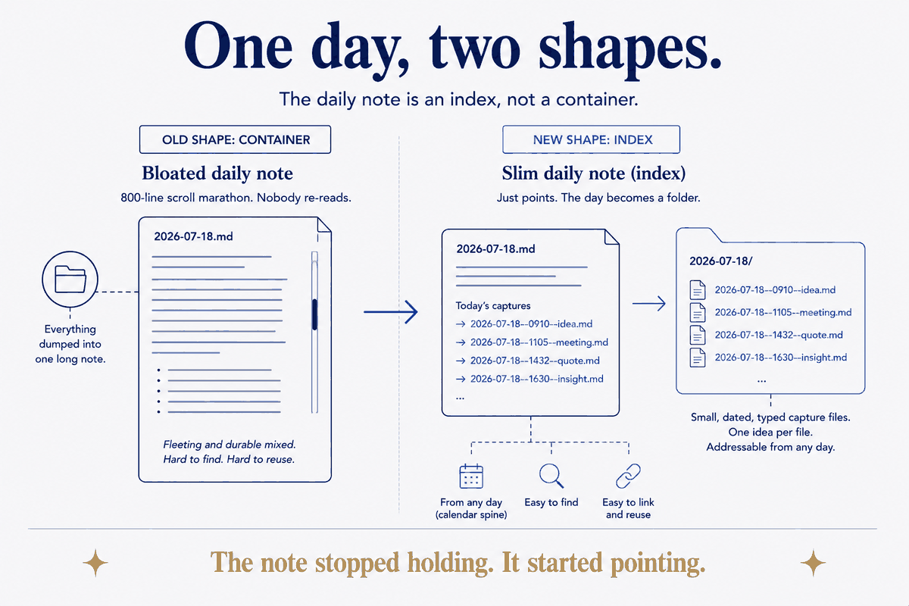

For knowledge workers
Day-Folders as the Atomic Capture Unit
Most daily-note systems treat the daily-note as the container. I treat it as an index — and put the day's captures in sibling files.

For knowledge workers
Most daily-note systems treat the daily-note as the container. I treat it as an index — and put the day's captures in sibling files.
